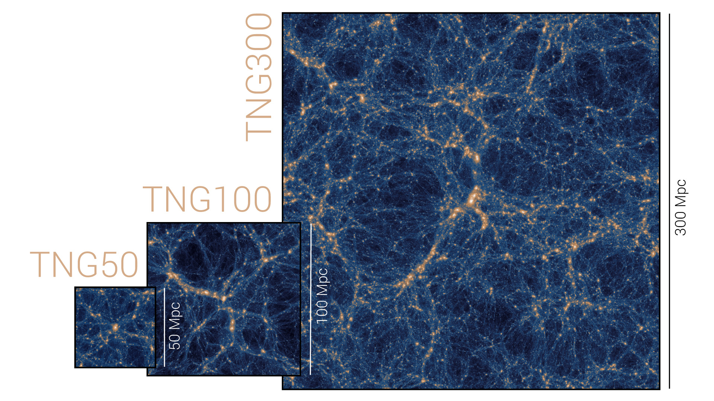
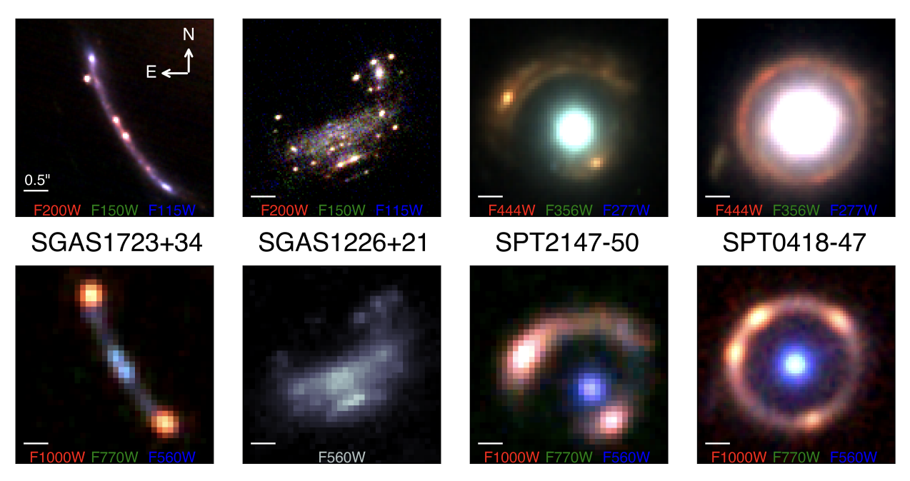

Dark Matter Halos and Stellar Structure in the IllustrisTNG50 Simulation
Most recently, I collaborated with Dr. Austin Hinkel at Thomas More University to investigate how dark matter halos influence stellar structure. Using the high-resolution IllustrisTNG50 cosmological simulation, I developed analyses to quantify halo–disk misalignment, characterize stellar disk warping, and measure spatial clustering with the two-point correlation function, exploring the connection between stellar structures and the underlying dark matter distribution. This work formed the basis of my senior thesis, culminating in a first-author report, poster, and oral presentation, and was presented at the 245th meeting of the American Astronomical Society.

JWST NIRSpec IFU Data Reduction
Working with Dr. Matthew Bayliss's group at the University of Cincinnati, I contributed to the development of Python scripts supporting the science calibration pipeline for the James Webb Space Telescope NIRSpec integral field unit (IFU), improving the efficiency of spectral data reduction for observations of strongly lensed galaxies. These observations enabled spatially resolved spectroscopy of faint, high-redshift systems, providing insight into star formation, stellar populations, and baryonic structure in the early universe. This work resulted in producing a "how-to" guide for JWST NIRSpec IFU data reduction, as well as my co-authorship on a publication led by Jane Rigby in The Astrophysical Journal.
- Rigby et al., The Astrophysical Journal — View Paper
- JWST NIRSpec IFU Data Reduction Guide — View Guide